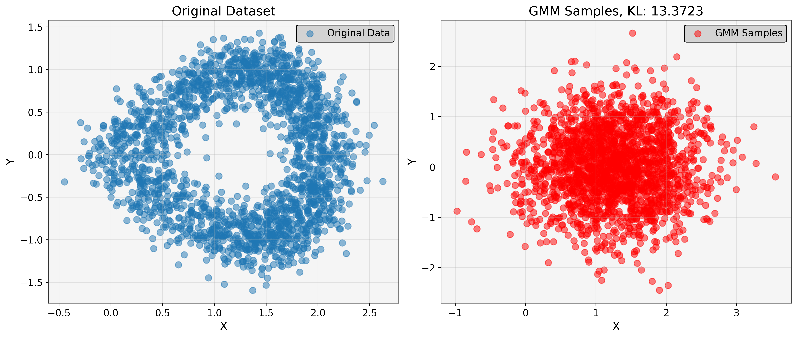
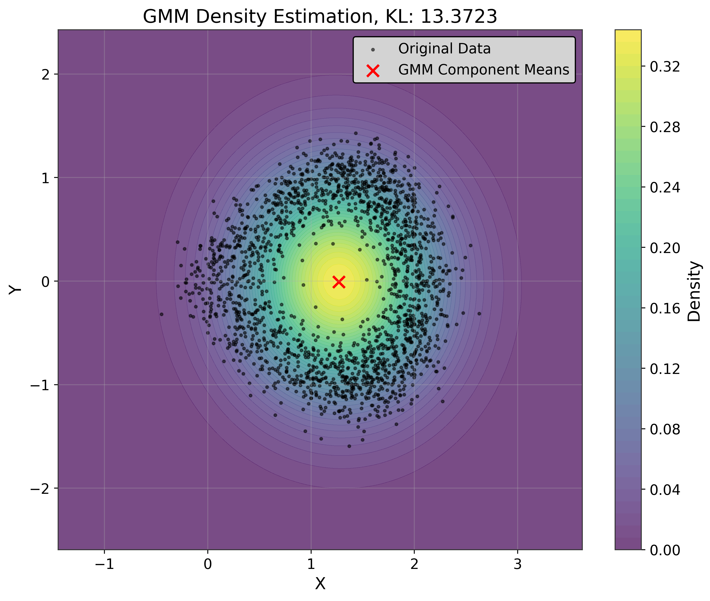
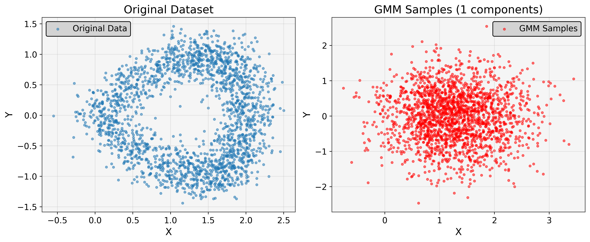
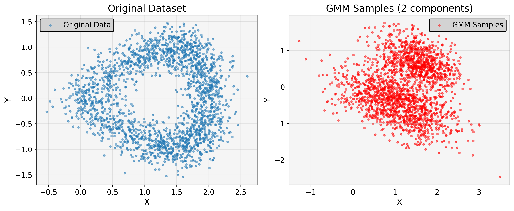
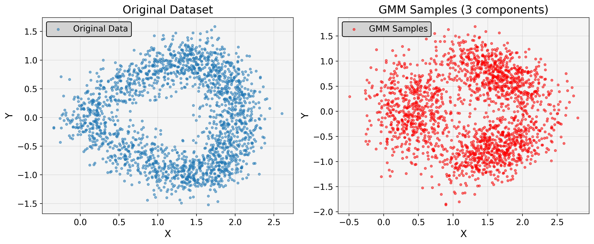
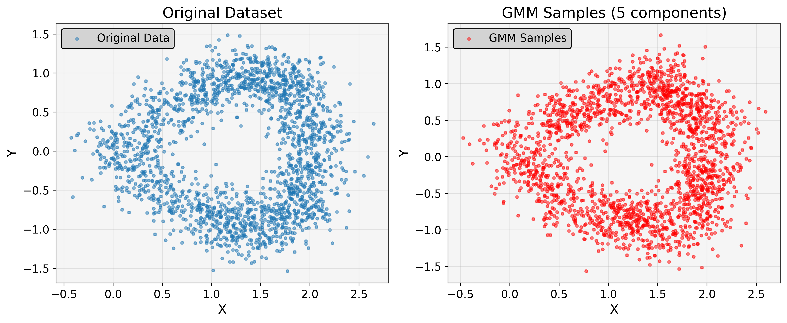
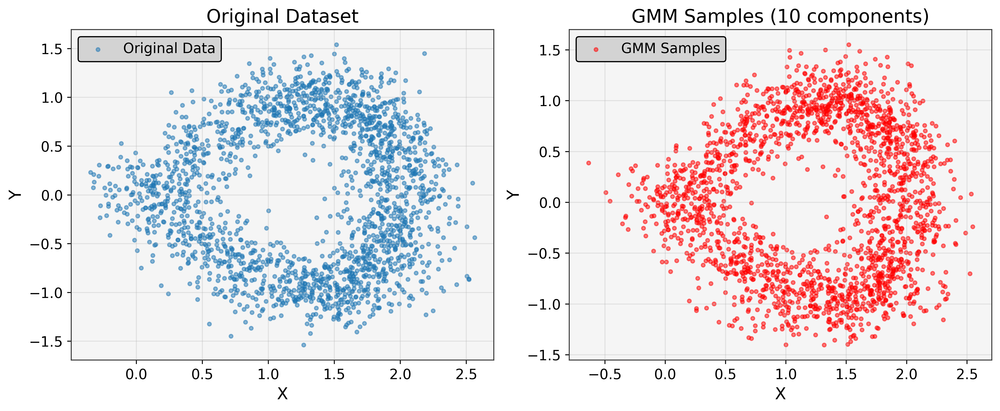

[82]:
import torch
import numpy as np
import matplotlib.pyplot as plt
import os
os.chdir('../')
from tgmm import GaussianMixture, GMMInitializer, dynamic_figsize, plot_gmm
device = 'cpu'
random_state = 0
np.random.seed(random_state)
torch.manual_seed(random_state)
if device == 'cuda':
torch.cuda.manual_seed(random_state)
print('CUDA version:', torch.version.cuda)
print('Device:', torch.cuda.get_device_name(0))
else:
print('Using CPU')
Using CPU
[83]:
import torch
import numpy as np
import matplotlib.pyplot as plt
from scipy import stats
# Create a banana-shaped dataset
def create_banana_dataset(n_samples=1000, noise=0.1):
"""Create a banana-shaped dataset in 2D."""
t = np.linspace(0, np.pi, n_samples)
x = 2 * np.sin(t) + np.random.normal(0, noise, n_samples)
y = np.sin(2 * t) + np.random.normal(0, noise, n_samples)
data = np.column_stack([x, y])
return torch.tensor(data, dtype=torch.float32)
# Function to estimate KL divergence using k-nearest neighbor method
import torch
import numpy as np
import matplotlib.pyplot as plt
from scipy import stats
from scipy.spatial import cKDTree # Add this import
# Function to estimate KL divergence using k-nearest neighbor method
def knn_kl_divergence(X, Y, k=5):
"""
Estimate KL divergence using k-nearest neighbor method
X, Y: datasets (torch tensors)
k: number of nearest neighbors to consider
"""
n, m = len(X), len(Y)
# Move tensors to CPU before converting to NumPy
X_cpu = X.cpu() if X.is_cuda else X
Y_cpu = Y.cpu() if Y.is_cuda else Y
X_np, Y_np = X_cpu.numpy(), Y_cpu.numpy()
d = X.shape[1] # dimension
# Calculate k-nn distances for each point in X relative to X
tree_X = cKDTree(X_np) # Changed from stats.cKDTree to cKDTree
dist_X, _ = tree_X.query(X_np, k=k+1) # +1 because first neighbor is the point itself
eps_X = dist_X[:, -1] # distance to k-th neighbor
# Count points from Y within eps_X for each point in X
tree_Y = cKDTree(Y_np) # Changed from stats.cKDTree to cKDTree
count_Y = np.zeros(n)
for i in range(n):
count_Y[i] = len(tree_Y.query_ball_point(X_np[i], eps_X[i]))
# Calculate KL divergence
count_Y = np.maximum(count_Y, 1) # avoid division by zero
kl = d * np.mean(np.log(m / count_Y)) + np.log(n / (n-1))
return kl
# Function to visualize GMM samples and density
def visualize_gmm(X, gmm, n_samples, title_prefix="GMM"):
# Sample from the fitted GMM
samples, _ = gmm.sample(n_samples=n_samples)
# Calculate KL divergence
kl_div = knn_kl_divergence(X, samples)
print(f"{title_prefix} - KL Divergence: {kl_div:.4f}")
# Create figure with 2 subplots
fig, (ax1, ax2) = plt.subplots(1, 2, figsize=(14, 6))
# Plot original data vs samples
ax1.scatter(X[:, 0].numpy(), X[:, 1].numpy(), alpha=0.5, label='Original Data')
ax1.set_title('Original Dataset')
ax1.set_xlabel('X')
ax1.set_ylabel('Y')
ax1.grid(True)
ax1.legend()
ax2.scatter(samples[:, 0].numpy(), samples[:, 1].numpy(), alpha=0.5, color='red', label='GMM Samples')
ax2.set_title(f'GMM Samples, KL: {kl_div:.4f}')
ax2.set_xlabel('X')
ax2.set_ylabel('Y')
ax2.grid(True)
ax2.legend()
plt.tight_layout()
plt.show()
# Visualize the density
x_min, x_max = X[:, 0].min().item() - 1, X[:, 0].max().item() + 1
y_min, y_max = X[:, 1].min().item() - 1, X[:, 1].max().item() + 1
xx, yy = np.meshgrid(np.linspace(x_min, x_max, 100), np.linspace(y_min, y_max, 100))
X_grid = torch.tensor(np.c_[xx.ravel(), yy.ravel()], dtype=torch.float32)
# Get log probabilities
log_probs = gmm.score_samples(X_grid)
Z = np.exp(log_probs.numpy())
Z = Z.reshape(xx.shape)
# Create the density plot
plt.figure(figsize=(10, 8))
plt.contourf(xx, yy, Z, levels=50, cmap='viridis', alpha=0.7)
plt.colorbar(label='Density')
plt.scatter(X[:, 0].numpy(), X[:, 1].numpy(), s=5, alpha=0.5, label='Original Data', color='black')
# Plot the component means
means = gmm.means_.detach().numpy()
plt.scatter(means[:, 0], means[:, 1], c='red', s=100, marker='x', label='GMM Component Means')
plt.title(f'GMM Density Estimation, KL: {kl_div:.4f}')
plt.xlabel('X')
plt.ylabel('Y')
plt.legend()
plt.grid(True)
plt.show()
return kl_div
# Main experiment function
def run_gmm_experiment():
# Create the banana-shaped dataset
n_samples = 2000
X = create_banana_dataset(n_samples, noise=0.2)
# Test with 1 component (single Gaussian)
print("\nFitting GMM with 1 component (single Gaussian)")
gmm1 = GaussianMixture(
n_components=1,
n_features=2,
covariance_type='full',
init_params='kmeans',
max_iter=100,
random_state=random_state,
device=device,
)
gmm1.fit(X)
kl1 = visualize_gmm(X, gmm1, n_samples, "Single Gaussian")
# Print final comparison
print("\nKL Divergence Results:")
print(f"Single Gaussian: {kl1:.4f}")
if __name__ == "__main__":
run_gmm_experiment()
Fitting GMM with 1 component (single Gaussian)
Single Gaussian - KL Divergence: 13.3723


KL Divergence Results:
Single Gaussian: 13.3723
[84]:
def get_component_covariance(gmm, idx):
"""
Extract covariance matrix for a specific component based on covariance_type.
Parameters:
-----------
gmm : GaussianMixture
The Gaussian Mixture Model
idx : int
Component index
Returns:
--------
cov : torch.Tensor
Covariance matrix in full form (n_features, n_features)
"""
if gmm.covariance_type == 'full':
return gmm.covariances_[idx]
elif gmm.covariance_type == 'diag':
return torch.diag(gmm.covariances_[idx])
elif gmm.covariance_type == 'spherical':
n_features = gmm.means_.shape[1]
return gmm.covariances_[idx] * torch.eye(n_features, device=gmm.means_.device)
elif gmm.covariance_type == 'tied_full':
return gmm.covariances_
elif gmm.covariance_type == 'tied_diag':
return torch.diag(gmm.covariances_)
elif gmm.covariance_type == 'tied_spherical':
n_features = gmm.means_.shape[1]
return gmm.covariances_ * torch.eye(n_features, device=gmm.means_.device)
else:
raise ValueError(f"Unknown covariance type: {gmm.covariance_type}")
def gmm_kl_divergence_monte_carlo(gmm_p, gmm_q, n_samples=100000):
# Draw samples from the first GMM
X, _ = gmm_p.sample(n_samples=n_samples)
# Evaluate log probabilities under both GMMs
log_p = gmm_p.score_samples(X)
log_q = gmm_q.score_samples(X)
# Compute KL divergence
kl_div = torch.mean(log_p - log_q)
return kl_div.item()
def gaussian_kl_divergence(mean1, cov1, mean2, cov2):
"""KL divergence between two multivariate Gaussians (closed form)"""
k = mean1.shape[0] # Dimensionality
# Calculate log|Σ2|/|Σ1|
logdet1 = torch.logdet(cov1)
logdet2 = torch.logdet(cov2)
# Calculate tr(Σ2^-1 Σ1)
cov2_inv = torch.inverse(cov2)
trace_term = torch.trace(cov2_inv @ cov1)
# Calculate (μ2-μ1)^T Σ2^-1 (μ2-μ1)
mean_diff = mean2 - mean1
mahalanobis = mean_diff @ cov2_inv @ mean_diff
# Combine terms
kl = 0.5 * (logdet2 - logdet1 + trace_term + mahalanobis - k)
return kl
def gmm_component_kl(gmm_p, gmm_q):
"""Approximate KL(P||Q) by matching components and computing weighted KL"""
n_components = gmm_p.n_components
if gmm_q.n_components != n_components:
raise ValueError("Both GMMs must have the same number of components")
# Match components based on means (Hungarian algorithm would be better)
# This is a simple greedy matching for illustration
kl_sum = 0.0
for i in range(n_components):
mean_p = gmm_p.means_[i]
cov_p = get_component_covariance(gmm_p, i)
# Find closest component in Q
min_dist = float('inf')
best_j = 0
for j in range(n_components):
mean_q = gmm_q.means_[j]
dist = torch.norm(mean_p - mean_q)
if dist < min_dist:
min_dist = dist
best_j = j
mean_q = gmm_q.means_[best_j]
cov_q = get_component_covariance(gmm_q, best_j)
# Compute KL and weight by component weight
kl_sum += gmm_p.weights_[i] * gaussian_kl_divergence(mean_p, cov_p, mean_q, cov_q)
return kl_sum
def gmm_variational_kl(gmm_p, gmm_q):
"""Variational approximation to KL(P||Q) for GMMs"""
kl_sum = 0.0
n_components_p = gmm_p.n_components
n_components_q = gmm_q.n_components
for i in range(n_components_p):
min_kl = float('inf')
best_j = 0
for j in range(n_components_q):
# Get means and covariances
mean_p = gmm_p.means_[i]
cov_p = get_component_covariance(gmm_p, i)
mean_q = gmm_q.means_[j]
cov_q = get_component_covariance(gmm_q, j)
# Calculate KL between these components
kl_ij = gaussian_kl_divergence(mean_p, cov_p, mean_q, cov_q)
# Take minimum KL across Q components
if kl_ij < min_kl:
min_kl = kl_ij
best_j = j
# Add weighted KL to sum
kl_sum += gmm_p.weights_[i] * (min_kl - torch.log(gmm_q.weights_[best_j]))
return kl_sum
[85]:
# Create the banana dataset
X = create_banana_dataset(n_samples=2000, noise=0.2)
# Fit GMM to the dataset
gmm = GaussianMixture(n_components=5, n_features=2, covariance_type='spherical')
gmm.fit(X)
# Create a different GMM to compare against
# This could be:
# 1. A GMM fitted to different data
# 2. A GMM with different parameters
# 3. A GMM fitted to samples from your first GMM
gmm2 = GaussianMixture(n_components=5, n_features=2, covariance_type='full')
gmm2.fit(X)
# Calculate KL divergence using Monte Carlo
kl_mc = gmm_kl_divergence_monte_carlo(gmm, gmm2)
print(f"KL divergence (Monte Carlo): {kl_mc:.4f}")
# Or using component-wise approximation
kl_comp = gmm_component_kl(gmm, gmm2)
print(f"KL divergence (Component-wise): {kl_comp:.4f}")
# Or using variational approximation
kl_var = gmm_variational_kl(gmm, gmm2)
print(f"KL divergence (Variational): {kl_var:.4f}")
KL divergence (Monte Carlo): 0.1872
KL divergence (Component-wise): 1.0423
KL divergence (Variational): 2.6481
[99]:
import torch
import numpy as np
from scipy import stats
from scipy.spatial import cKDTree
def maximum_mean_discrepancy(X, Y, kernel='gaussian', sigma=None):
"""
Maximum Mean Discrepancy (MMD) measures distribution differences in a kernel space.
Parameters:
-----------
X, Y : torch.Tensor
Input data samples from two distributions
kernel : str
Kernel type ('gaussian' or 'linear')
sigma : float or None
Bandwidth parameter for Gaussian kernel (if None, uses median heuristic)
Returns:
--------
float: MMD value (lower values indicate more similar distributions)
"""
# Convert inputs to torch tensors if needed
if not isinstance(X, torch.Tensor):
X = torch.tensor(X, dtype=torch.float32)
if not isinstance(Y, torch.Tensor):
Y = torch.tensor(Y, dtype=torch.float32)
# Move to CPU if on GPU
X_cpu = X.cpu() if X.is_cuda else X
Y_cpu = Y.cpu() if Y.is_cuda else Y
nx, ny = X_cpu.shape[0], Y_cpu.shape[0]
if kernel == 'gaussian':
if sigma is None:
# Median heuristic for sigma
X_Y = torch.cat([X_cpu, Y_cpu], dim=0)
pairwise_dists = torch.cdist(X_Y, X_Y, p=2) ** 2
sigma = torch.sqrt(torch.median(pairwise_dists[pairwise_dists > 0]))
# Compute kernel matrices
def gaussian_kernel(x, y, sigma=sigma):
return torch.exp(-torch.sum((x.unsqueeze(1) - y.unsqueeze(0)) ** 2, dim=2) / (2 * sigma ** 2))
K_XX = gaussian_kernel(X_cpu, X_cpu)
K_XY = gaussian_kernel(X_cpu, Y_cpu)
K_YY = gaussian_kernel(Y_cpu, Y_cpu)
elif kernel == 'linear':
K_XX = X_cpu @ X_cpu.T
K_XY = X_cpu @ Y_cpu.T
K_YY = Y_cpu @ Y_cpu.T
else:
raise ValueError(f"Unsupported kernel type: {kernel}")
# Calculate MMD^2 estimator
mmd_squared = (torch.sum(K_XX) - torch.sum(torch.diag(K_XX))) / (nx * (nx - 1))
mmd_squared += (torch.sum(K_YY) - torch.sum(torch.diag(K_YY))) / (ny * (ny - 1))
mmd_squared -= 2 * torch.sum(K_XY) / (nx * ny)
return torch.sqrt(torch.clamp(mmd_squared, min=0.0)).item()
def wasserstein_distance(X, Y):
"""
Wasserstein Distance (Earth Mover's Distance) measures the minimum cost to
transform one distribution into another.
Parameters:
-----------
X, Y : torch.Tensor
Input data samples from two distributions
Returns:
--------
float: Wasserstein distance (lower values indicate more similar distributions)
"""
# Convert to numpy if tensors
if isinstance(X, torch.Tensor):
X = X.cpu().numpy() if X.is_cuda else X.numpy()
if isinstance(Y, torch.Tensor):
Y = Y.cpu().numpy() if Y.is_cuda else Y.numpy()
# For 1D data, use scipy's efficient implementation
if X.shape[1] == 1:
return stats.wasserstein_distance(X.flatten(), Y.flatten())
try:
# Try to use POT library if available (best implementation)
import ot
n, m = len(X), len(Y)
a, b = np.ones(n)/n, np.ones(m)/m # Uniform distribution weights
# Compute cost matrix - squared Euclidean distance
M = ot.dist(X, Y, metric='sqeuclidean')
# Compute Wasserstein distance (for Wasserstein-2, we use squared distances then sqrt result)
w_dist = np.sqrt(ot.emd2(a, b, M))
return w_dist
except ImportError:
# Fallback to a simpler implementation
n, m = len(X), len(Y)
all_dists = np.zeros((n, m))
# Compute all pairwise distances
for i in range(n):
for j in range(m):
all_dists[i, j] = np.sum((X[i] - Y[j])**2)
# Greedy matching approximation
total_cost = 0
remaining_x = list(range(n))
remaining_y = list(range(m))
while remaining_x and remaining_y:
# Find minimum distance pair
min_val = float('inf')
min_i, min_j = -1, -1
for i_idx, i in enumerate(remaining_x):
for j_idx, j in enumerate(remaining_y):
if all_dists[i, j] < min_val:
min_val = all_dists[i, j]
min_i, min_j = i_idx, j_idx
# Add cost and remove matched points
total_cost += np.sqrt(min_val)
remaining_x.pop(min_i)
remaining_y.pop(min_j)
# Return average cost
return total_cost / max(n, m)
def jensen_shannon_divergence(X, Y, n_bins=50):
"""
Jensen-Shannon Divergence is a symmetric version of KL divergence.
JS(P||Q) = 0.5*KL(P||M) + 0.5*KL(Q||M) where M = 0.5*(P+Q)
Parameters:
-----------
X, Y : torch.Tensor
Input data samples from two distributions
n_bins : int
Number of bins for histogram approximation
Returns:
--------
float: JS divergence (lower values indicate more similar distributions)
"""
# Convert to numpy if tensors
if isinstance(X, torch.Tensor):
X = X.cpu().numpy() if X.is_cuda else X.numpy()
if isinstance(Y, torch.Tensor):
Y = Y.cpu().numpy() if Y.is_cuda else Y.numpy()
n_dims = X.shape[1]
js_div = 0.0
# Calculate JS for each dimension independently, then average
for d in range(n_dims):
# Get data for this dimension
x_d = X[:, d]
y_d = Y[:, d]
# Define common bin edges
min_val = min(x_d.min(), y_d.min())
max_val = max(x_d.max(), y_d.max())
bin_edges = np.linspace(min_val, max_val, n_bins+1)
# Compute histograms
p, _ = np.histogram(x_d, bins=bin_edges, density=True)
q, _ = np.histogram(y_d, bins=bin_edges, density=True)
# Add small epsilon to avoid log(0)
epsilon = 1e-10
p = p + epsilon
q = q + epsilon
# Normalize
p = p / np.sum(p)
q = q / np.sum(q)
# Compute mixture distribution M = 0.5*(P+Q)
m = 0.5 * (p + q)
# Compute KL divergences
kl_p_m = np.sum(p * np.log(p / m))
kl_q_m = np.sum(q * np.log(q / m))
# Compute JS divergence for this dimension
js_d = 0.5 * kl_p_m + 0.5 * kl_q_m
js_div += js_d
# Return average JS across dimensions
return js_div / n_dims
def energy_distance(X, Y):
"""
Energy Distance is a statistical distance between distributions based on
the expected distance between random vectors.
E(P,Q) = 2*E[||X-Y||] - E[||X-X'||] - E[||Y-Y'||]
Parameters:
-----------
X, Y : torch.Tensor
Input data samples from two distributions
Returns:
--------
float: Energy distance (lower values indicate more similar distributions)
"""
# Convert to torch tensors if needed
if not isinstance(X, torch.Tensor):
X = torch.tensor(X, dtype=torch.float32)
if not isinstance(Y, torch.Tensor):
Y = torch.tensor(Y, dtype=torch.float32)
# Move to CPU if on GPU
X_cpu = X.cpu() if X.is_cuda else X
Y_cpu = Y.cpu() if Y.is_cuda else Y
nx, ny = X_cpu.shape[0], Y_cpu.shape[0]
# Compute pairwise Euclidean distances
XX_dist = torch.cdist(X_cpu, X_cpu, p=2)
XY_dist = torch.cdist(X_cpu, Y_cpu, p=2)
YY_dist = torch.cdist(Y_cpu, Y_cpu, p=2)
# Calculate mean distances (excluding self-distances for XX and YY)
XX_mean = (torch.sum(XX_dist) - torch.sum(torch.diag(XX_dist))) / (nx * (nx - 1))
YY_mean = (torch.sum(YY_dist) - torch.sum(torch.diag(YY_dist))) / (ny * (ny - 1))
XY_mean = torch.sum(XY_dist) / (nx * ny)
# Calculate Energy Distance: 2*E[||X-Y||] - E[||X-X'||] - E[||Y-Y'||]
energy_dist = 2 * XY_mean - XX_mean - YY_mean
# Ensure non-negative result (theoretical value should be non-negative)
return torch.sqrt(torch.clamp(energy_dist, min=0.0)).item()
def compare_distributions(X, Y, metrics=None):
"""
Compare two datasets using multiple distribution metrics.
Parameters:
-----------
X, Y : torch.Tensor
Input data samples from two distributions
metrics : list
List of metrics to compute (default: all metrics)
Returns:
--------
dict: Dictionary with computed metrics
"""
if metrics is None:
metrics = ['mmd', 'wasserstein', 'jensen_shannon', 'energy_distance']
results = {}
print("Comparing distributions...")
print(f"Number of samples in X: {X.shape[0]}")
print(f"Number of samples in Y: {Y.shape[0]}")
print(f"Number of dimensions: {X.shape[1]}")
print(f"Metrics to compute: {metrics}")
print("Calculating metrics...")
if 'mmd' in metrics:
print("Calculating MMD...")
results['mmd'] = maximum_mean_discrepancy(X, Y)
if 'wasserstein' in metrics:
print("Calculating Wasserstein distance...")
results['wasserstein'] = wasserstein_distance(X, Y)
if 'jensen_shannon' in metrics:
print("Calculating Jensen-Shannon divergence...")
results['jensen_shannon'] = jensen_shannon_divergence(X, Y)
if 'energy_distance' in metrics:
print("Calculating Energy distance...")
results['energy_distance'] = energy_distance(X, Y)
return results
# Example usage with GMM
def example_with_gmm(n_samples=2000, n_components=1):
"""
Example showing how to use distribution metrics with GMM.
Parameters:
-----------
n_samples : int
Number of samples to generate
n_components : int
Number of GMM components
Returns:
--------
dict: Results of distribution comparison
"""
# Create a banana-shaped dataset
def create_banana_dataset(n_samples=1000, noise=0.1):
t = np.linspace(0, np.pi, n_samples)
x = 2 * np.sin(t) + np.random.normal(0, noise, n_samples)
y = np.sin(2 * t) + np.random.normal(0, noise, n_samples)
data = np.column_stack([x, y])
return torch.tensor(data, dtype=torch.float32)
# Create the dataset
X = create_banana_dataset(n_samples, noise=0.2)
# Fit GMM to the dataset
gmm = GaussianMixture(
n_components=n_components,
n_features=2,
covariance_type='full',
init_params='kmeans',
max_iter=100,
random_state=42,
device=device,
)
gmm.fit(X)
# Sample from the fitted GMM
Y, _ = gmm.sample(n_samples=n_samples)
# Compare distributions
results = compare_distributions(X, Y)
# Print results
print("\nDistribution comparison metrics:")
for name, value in results.items():
print(f"{name}: {value:.6f}")
import matplotlib.pyplot as plt
# Visualize
plt.figure(figsize=(12, 5))
plt.subplot(1, 2, 1)
plt.scatter(X[:, 0].numpy(), X[:, 1].numpy(), alpha=0.5, s=10, label='Original Data')
plt.title('Original Dataset')
plt.xlabel('X')
plt.ylabel('Y')
plt.legend()
plt.grid(True)
plt.subplot(1, 2, 2)
plt.scatter(Y[:, 0].numpy(), Y[:, 1].numpy(), alpha=0.5, s=10, color='red', label='GMM Samples')
plt.title(f'GMM Samples ({n_components} components)')
plt.xlabel('X')
plt.ylabel('Y')
plt.legend()
plt.grid(True)
plt.tight_layout()
plt.show()
return results
if __name__ == "__main__":
example_with_gmm(n_components=1)
example_with_gmm(n_components=2)
example_with_gmm(n_components=3)
example_with_gmm(n_components=5)
example_with_gmm(n_components=10)
Comparing distributions...
Number of samples in X: 2000
Number of samples in Y: 2000
Number of dimensions: 2
Metrics to compute: ['mmd', 'wasserstein', 'jensen_shannon', 'energy_distance']
Calculating metrics...
Calculating MMD...
Calculating Wasserstein distance...
Calculating Jensen-Shannon divergence...
Calculating Energy distance...
Distribution comparison metrics:
mmd: 0.046690
wasserstein: 0.297792
jensen_shannon: 0.043860
energy_distance: 0.139565

Comparing distributions...
Number of samples in X: 2000
Number of samples in Y: 2000
Number of dimensions: 2
Metrics to compute: ['mmd', 'wasserstein', 'jensen_shannon', 'energy_distance']
Calculating metrics...
Calculating MMD...
Calculating Wasserstein distance...
Calculating Jensen-Shannon divergence...
Calculating Energy distance...
Distribution comparison metrics:
mmd: 0.032363
wasserstein: 0.223581
jensen_shannon: 0.025145
energy_distance: 0.097903

Comparing distributions...
Number of samples in X: 2000
Number of samples in Y: 2000
Number of dimensions: 2
Metrics to compute: ['mmd', 'wasserstein', 'jensen_shannon', 'energy_distance']
Calculating metrics...
Calculating MMD...
Calculating Wasserstein distance...
Calculating Jensen-Shannon divergence...
Calculating Energy distance...
Distribution comparison metrics:
mmd: 0.000000
wasserstein: 0.129728
jensen_shannon: 0.012098
energy_distance: 0.036910

Comparing distributions...
Number of samples in X: 2000
Number of samples in Y: 2000
Number of dimensions: 2
Metrics to compute: ['mmd', 'wasserstein', 'jensen_shannon', 'energy_distance']
Calculating metrics...
Calculating MMD...
Calculating Wasserstein distance...
Calculating Jensen-Shannon divergence...
Calculating Energy distance...
Distribution comparison metrics:
mmd: 0.000000
wasserstein: 0.071624
jensen_shannon: 0.007886
energy_distance: 0.000000

Comparing distributions...
Number of samples in X: 2000
Number of samples in Y: 2000
Number of dimensions: 2
Metrics to compute: ['mmd', 'wasserstein', 'jensen_shannon', 'energy_distance']
Calculating metrics...
Calculating MMD...
Calculating Wasserstein distance...
Calculating Jensen-Shannon divergence...
Calculating Energy distance...
Distribution comparison metrics:
mmd: 0.000000
wasserstein: 0.066156
jensen_shannon: 0.004292
energy_distance: 0.000000
